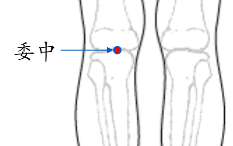

【穴位名稱】: 委中 (BL40)

【治療症狀】: 血栓閉塞性脈管炎 脫肛 痔瘡 腎炎、腎孟炎 乳炎、乳癱 腦腫瘤 脊椎、軟骨壓迫(骨刺) 膝蓋疼痛 小腿肚痛 背痛 腰酸腰痛 坐骨神經痛 脊柱痛 尾骶骨痛 蕁麻疹 青春痘 濕疹 丹毒 手指化膿 腳趾化膿 鼻出血 眩暈 惡熱 惡寒
【取穴位置】: 在膕橫紋中點，當股二頭肌腱與半腱肌肌腱的中間。
【針刺方法】: 直刺l～1.5吋，或用三棱針點刺膕靜脈出血。
回前頁